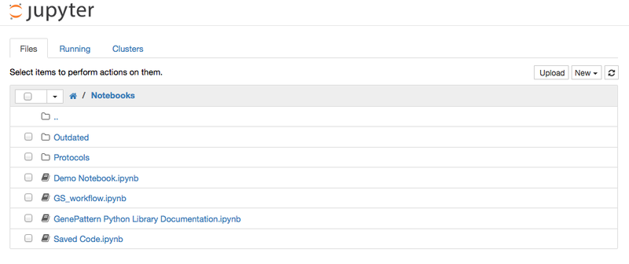
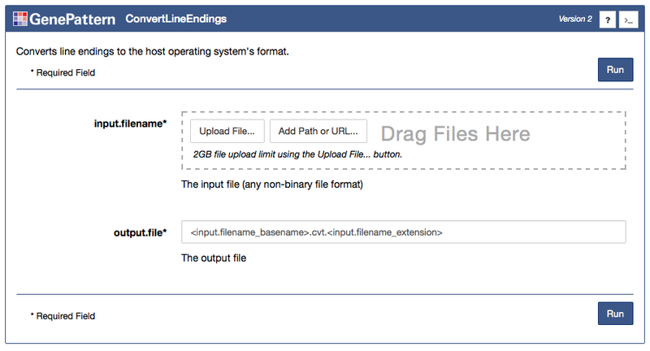

Using the GenePattern Notebook Environment
You can use the GenePattern Notebook environment by registering for a GenePattern account if you do not already have one, and logging into the GenePattern Notebook Repository. This option requires no installation and provides the advantage of running your notebooks in the Amazon cloud. If you wish to install the GenePattern Notebook environment on a local machine, you can follow these instructions.
1. Login to the GenePattern Notebook Repository
Open up the GenePattern Notebook Repository by visiting https://notebook.genepattern.org and then log in with your GenePattern account. If you do not have a GenePattern account you can sign up for one by clicking the Register a New GenePattern Account button on the right

2. Create a New GenePattern Notebook
On the page listing notebook files, look in the upper right and you should see three buttons: Upload, New and a Refresh icon. Pull down the New menu and select Notebooks > Python 3. This will create a new GenePattern notebook, which will open in a new browser tab. It should look something like the screenshot below.
At the top of this page is a menu bar and toolbar for working with the notebook. Below this is the notebook’s first cell. Python code can executed from cells, documentation can be added and GenePattern widgets can be entered to launch analyses. For general information on how to use Jupyter notebooks, see the Jupyter documentation.
3. Log into GenePattern
- Select any blank cell
- Change that cell’s type to GenePattern using the menu found in the Jupyter toolbar. You may be prompted to confirm that you want to turn this cell into a GenePattern cell. This is expected.
- Once inserted, the cell will prompt you to select a GenePattern server, as well as to enter a username and password. The default server to select is the Broad-hosted GenePattern server, http://genepattern.broadinstitute.org.
- Once you have filled in these fields, click Log into GenePattern.
If one does not have a GenePattern account, first select the server and then click Register an Account.

4. Begin an Analysis
Once you are logged in, a GenePattern button will appear on the left side of the Notebook. This button is only visible when a GenePattern cell is selected. Clicking this button will open a sliding menu, which allows the user to select and run GenePattern analyses on the GenePattern server.
You can search these analyses using the Type to Filter box found in the upper right corner of the sliding menu. Once you have selected an analysis, click it to add it as a cell in the notebook.

Every task has a number of parameters, which can be used to upload data and to select other options for the analysis. Once you fill in these parameters, click Run to submit them as a job on the GenePattern server.

Once the Run button has been clicked, all selected files will upload and then the cell will change to indicate the status of the job in GenePattern’s queue. Jobs progress through the states of Pending, Running and finally either to Completed or Error.

5. Working with Results
When an analysis is completed, the cell will display the result files. Clicking on one of these files will show a menu of options, such as viewing the file, using the output programmatically in Python code or sending the file to a downstream analysis. If an analysis resulted in an error, it will present an error log. This file can be viewed to determine what went wrong with the analysis.
Result files can only be sent to GenePattern cells which are ready to accept input files.
The result file of one analysis can be easily be used as input for a later analysis. Simply click the result file to open the menu, and select either an existing downstream task or a new task. Clicking one of these options will place the correct value for the result file into the downstream form. In the case of sending to a new task, a new cell will be created for the downstream analysis. Alternatively, result files can also be dragged-and-dropped into the correct form.
6. Access in Python
Programmatic access to all GenePattern jobs and results is also automatically available using GenePattern’s Python library. Any job executed in a notebook can afterward be referenced using job followed by the job number. For example, if a job is number 1170434 (such as in the screenshot above), the variable name would be job1170434. Entering this into a code cell will return a reference to a GPJob object.
- For more information on using the GenePattern Python library, see the GenePattern Programmer’s Guide.
Code examples of how to reference GenePattern jobs or GenePattern result files are available in the notebook by clicking a job result and selecting “View Code Use” in the menu.